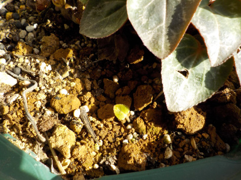
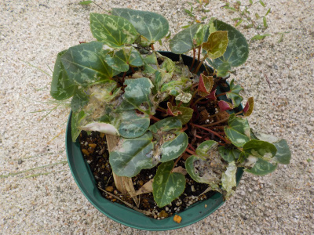
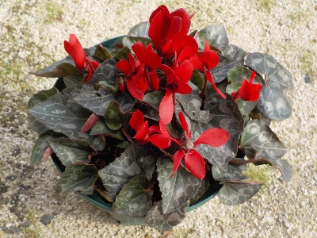
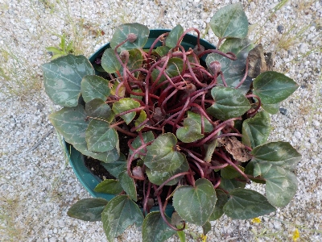
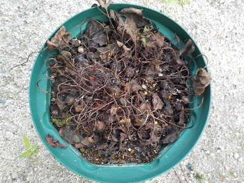
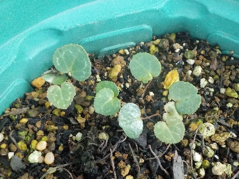

遊びで植物を育てよう
枯れそうだけど枯れずになんとかシクラメンが生きています。
更新日 : 2025/06/18
2023/02/12
ガーデンシクラメンの横に葉っぱが出てました。

この小さな葉っぱはガーデンシクラメン？それとも雑草？
親株の近くでこぼれ種が育ってくれるんなら楽でいいんですけど。
今後の成長が楽しみです。
TOP > 花 > シクラメン
2023/07/09
大雨に当たって、シクラメンの葉っぱがボロボロです。

軒下に置いていましたが、雨が酷くシクラメンがずぶ濡れになりました。
葉っぱが痛んで、穴がいっぱい開いています。
復活出来るかな？
TOP > 花 > シクラメン
2024/02/04
今季最初のガーデンシクラメンの花です。

ガーデンシクラメンの花がやっと咲きました。葉っぱは多くて元気そうなんですけどね。
今のところ花はこれ１つだけです。次はいつ咲くのかな？
TOP > 花 > シクラメン
2024/03/17
ガーデンシクラメンが沢山開花中です。

開花が遅かったので、きっと苗の調子が悪いんだろうと思っていました。
でも、ここにきて急に花が沢山咲きました。
これから何月まで花が楽しめるかな？
TOP > 花 > シクラメン
2024/06/02
ガーデンシクラメンの花が終わりました。

花の後半は花柄は取りましたが、茎を引っこ抜かなかったので種が沢山出来ています。
前回は失敗しましたが、また種蒔きしようかと思っています。
TOP > 花 > シクラメン
2024/07/01
ガーデンシクラメンが枯れました。

雨水が大量に当たったのかな？
枯れました。
タネが出来てると思うので、それの芽がでればいいし、出なけれさよならです。
シクラメンは難しいですね。この株は2020年の冬に買ったので、十分楽しみました。
TOP > 花 > シクラメン
2025/06/18
枯れたシクラメンの跡からシクラメン登場です。

発芽するかもしれないと長い間放置していたら本当に発芽しました。
うれしいんだけど、親は枯らしているので育てる自信はないです。
いままで放置で育っているんだから、今後も放置で育つといいんですけど夏の暑さは厳しいんだろうな。
TOP > 花 > シクラメン
シクラメンの記事をまとめたものはこちら
【おいしいものを食べよう。】【しっかり寝よう。】
【ソロ活をしよう!】【季節感のあることをしよう。】【動画視聴はほどほどに。】【当サイトの全てのコンテンツは無断転載禁止です。】